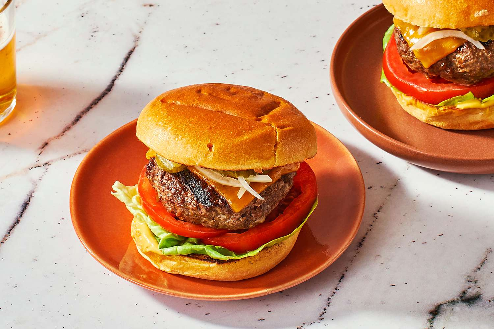

เบอร์เกอร์ เป็นอาหารที่นิยมอย่างมากในอเมริกา โดยคนบางกลุ่มเรียกเบอร์เกอร์ว่า Liberty sandwish เนื่อง เดี่ยวเหตุผลทางการเมือง เบอร์เกอร์นั้นประกอบด้วยขนมปังเบอร์เกอร์ เนื้อบด ผักเครื่องเขียง เช่น มะเชือเทศ หอมใหญ่ เป็นต้น ซอสมะเขือเทศ หรือ มายองเนส แล้วแต่อยากกิน โดยเบอร์เกอร์นั้นเป็นอาหารที่กินง่าย ราคาไม่แรงมากสำหรับคน ฝั่งตะวันตก อีกทั้งยังมีเบอร์เกอร์บางร้านถูกนำราคาไปใช้เป็นดัชนีในการเปรียบเทียบมูลค่าของสกุลเงิน ซึ่งดัชนีนั้นคือ ดัชนี Big Mac
